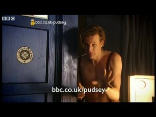
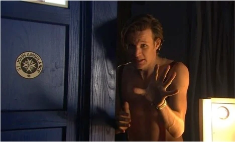

Эра Одиннадцатого Доктора
<<< НАЗАД ||| Голая правда ||| ДАЛЬШЕ >>>

The Naked Truth
мини-эпизод для "Детей в нужде"
18 ноября 2011
Формат: 2-минутный мини-эпизод
| Варианты озвучек: | * MVO BaibaKo |
|---|---|
| Скачивание и просмотр: |
В мини-эпизоде зрители раздевали Доктора, нажимая на красную кнопку. Несмотря на то, что он сломал четвертую стену и напрямую взаимодействовал с аудиторией, это сохранилось во вселенной благодаря повествовательному механизму Доктора, ведущего трансляцию.
